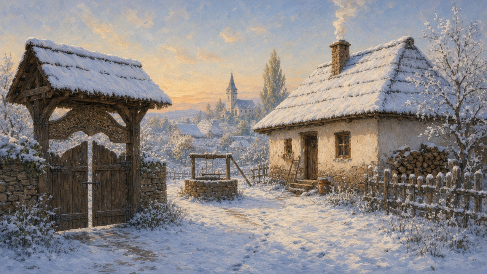
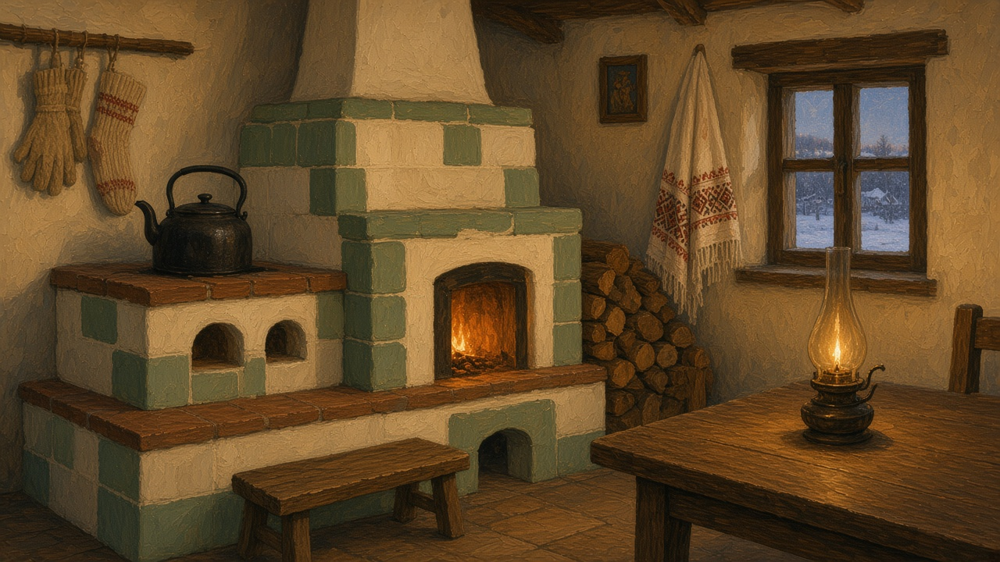

Winter
Iarna. Not the feast list. The months when the yard goes quiet, the woodpile matters more than the garden, and the house keeps the year.

The yard and the road
After the last jar goes down, the yard changes jobs. Snow sits on the poartă. The path to the well ices and someone breaks a crust before the first draw. Chickens still walk, slower. The woodpile is the season’s account book: too low in November and January will argue with you. Mud freezes into ruts. A village lane can hold a car or it can hold a story about the car that did not make it. In town the plow comes; in a hamlet you wait, or you walk. The bus may skip a day. People still go out — for bread, for the doctor, for a funeral — but they measure the trip. The rooms of the house face this yard all year; in iarna the yard just asks more of the boots. A river that was a picnic place in July is ice — that water is on rivers. The wood in the pile came from the forest before the snow sat on it.
A day that looks closed still has errands. Bread, if the house did not bake. The doctor, if the lane will take a car. A funeral does not wait for a thaw. Tracks in the lane say who tried the road and who turned back. The sat that keeps this road is on villages. The crust on the well is the same one named on the well. You do not need a map of the commune. You need the habit of looking at the path before you say you will be somewhere by noon.
The woodpile
Lemne de foc are the wood that is only heat. They go into a stivă against the wall, or under the eaves, before the snow sits on the stack and you can no longer see how much is left. The slope it came from, and the pădurar who can say whose mark was on the tree, are on the forest. A beam for a poartă is another job, already on gates. This stack is the one you carry in.
You count it by eye. A row that still reaches the window in January is a quiet week. A row down to the last armfuls means a trip, or a neighbor who still has extra. The pieces are split, or they are not, and the axe by the shed says which. Wet lemne hiss in the sobă and give smoke. The dry ones were stacked while the yard was still brown. In the morning someone takes an armful across the snow so the kettle can go on. You do not need a measure. You need the habit of looking at the stivă before you talk about how cold it is.
Ignat, and what the yard takes in
Around December 20 the household that still keeps a pig keeps Ignat. The saint’s day is on the calendar; the work is in the yard at first light. Neighbors come. There is steam, a fire, a table that will not look like a feast until later. The animal becomes sausages, slănină, tocătură, jars of fat, and the cuts that will sit in the cold room or the cellar until a name day needs them. It is not a festival poster and it is not gentle to write about, so keep the picture short: a day’s labor that feeds the winter, done with people who already know the steps. Town apartments buy the same meat at the shop. The word stayed. What autumn put in jars on the harvest page is the plant half of the same shelf. This is the animal half, timed to the cold so it keeps.
What comes in has names. Cârnați hung where the air moves. Slănină in salt, so a slab is still a slab in February. Tocătură for the pot. A jar of untură, the fat, for the pan when the garden has nothing green. The cuts that are not for this week go down and stay down. The feast dates around the day live on winter on the year. This page is only the weather and the work.
The cold room
January opens the room that harvest filled. The beci is under the house. The cămară is the cold room or the pantry that never quite warms — sometimes the same place, sometimes a north room with a door you keep shut. The autumn jars are already on the shelves. What this month adds is the Ignat shelf: slănină packed in salt, a jar of fat, a cut the cold can hold. A round of telemea may still sit in brine; that piece is on cheese. Wine, if the house still has a demijohn, stays in its own cool — that glass is on wine.
You go down with a bowl, not with a list. One jar. A potato or two. A cut if the day asks for it — a name day, a guest, a Sunday that is not a feast. Most Tuesdays the meat stays where it is. A lid that does not match still counts. Someone older knows which shelf is this autumn and which is what Ignat put away. The rooms above this floor are on the house. You do not need a plan of the cellar. You need the habit of asking whether this January still walks down for a jar, or only opens a shop bag.

Heat, and what the house does indoors
The sobă is the clock. Wood in from the stivă, kettle on, the warm wall children lean against while gloves dry. If the fire was fed before bed, the tiles are still warm at breakfast. If it was thin, someone is already outside for another armful. Rooms that face north stay closed. The good room stays cleaner and colder; the family lives by the stove — the split mapped on the house. Ash goes out in a bucket when the drawer is full. You do not need a diagram of the tiles. You need the habit of knowing which room still has heat at nine at night.
Evening by the stove
Evenings get long before the snow does. The bench by the sobă is where the house actually sits. Cloth work comes back under the lamp — the older name for that company is a șezătoare. Cards, a visit, the radio or the television. Someone mends. Someone shells seeds. A neighbor stops because the lane was passable, and does not stay for a feast. Children who still go out find packed snow behind the house; inside they take the warm bench. Christmas singing at the door is on colinde, not here. A troiță on the approach holds snow the way the poartă does; it does not leave when the family is away.
Sheep that went high in June are in the valley now — that turn is on shepherds. When the calendar opens again — Dragobete, Mărțișor — that turn is on the year. Until then iarna is the yard in frost, the road you think twice about, the stivă you count before dark, the cold room you open for one jar, and the evening by the sobă.